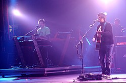

HISTÓRIA
Em 1983, Samuel Rosa e Henrique Portugal começaram a tocar em uma banda de reggae chamada Pouso Alto do Reggae,
junto com os irmãos Dinho Mourão (bateria) e Alexandre Mourão (baixo). Em 1991, o Pouso Alto do Reggae conseguiu
um show na casa de concertos AeroAnta, em São Paulo, mas como os irmãos Mourão não estavam em Belo Horizonte,
o baixista Lelo Zaneti e o baterista Haroldo Ferretti foram chamados para o show.
Antes da apresentação, o grupo mudou seu nome para Skank, inspirado na música de Bob Marley, "Easy Skanking"
nome de uma variação da cannabis sativa, popularmente conhecida como maconha).A banda fez sua estreia em 5
de junho de 1991, e devido à final do Campeonato Brasileiro no mesmo dia, o público pagante foi de 37 pessoas.
Entre os presentes,estavam André Jung e Charles Gavin, ex-bateristas das bandas Ira! e Titãs,respectivamente.
Após o show, a banda gostou da performance e resolveu continuar junta.Começou a tocar regularmente na churrascaria
belo-horizontina Mister Beef, bem como as casas noturnas Janis, Maxaluna e L'Apogée.A proposta musical era
transportar o clima do dancehall jamaicano para a tradição pop brasileira.
